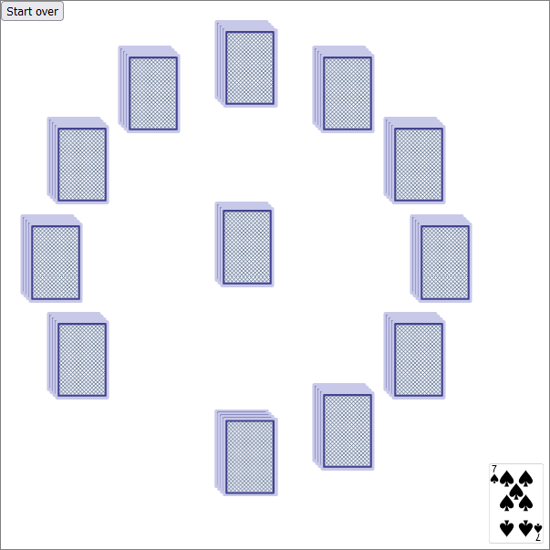
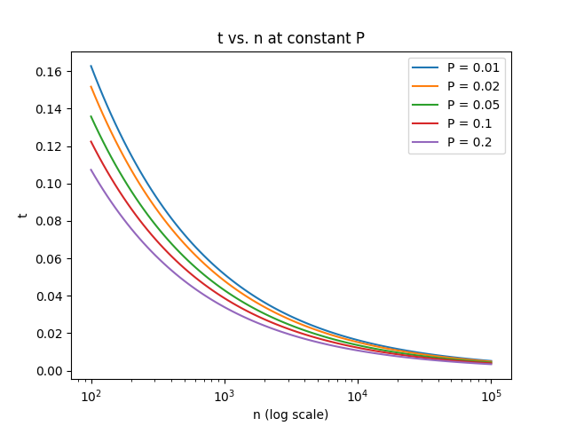
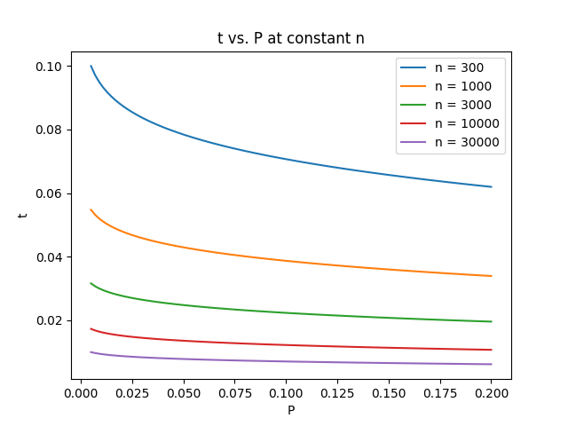
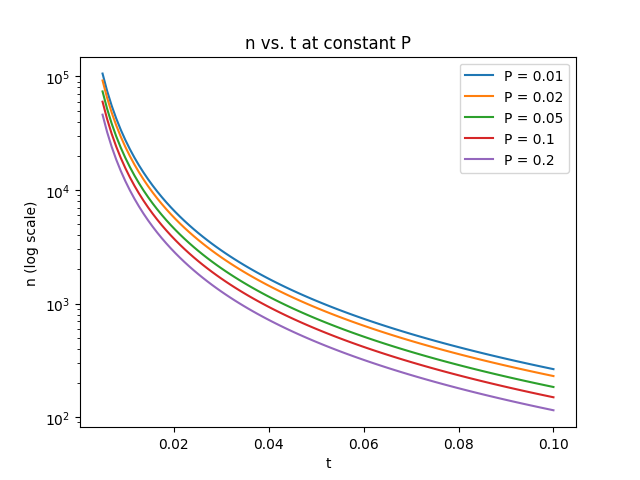
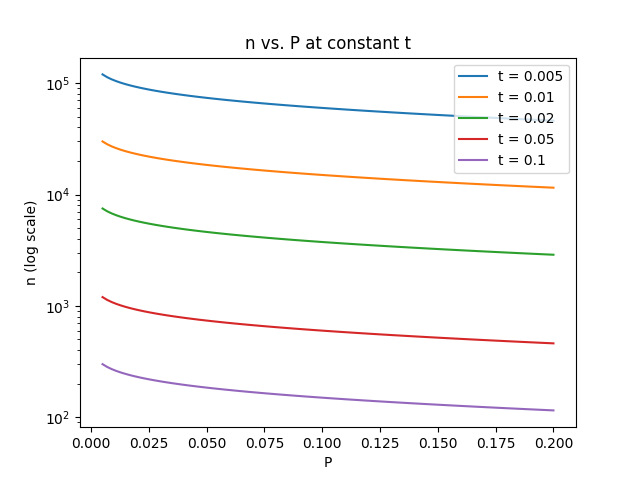
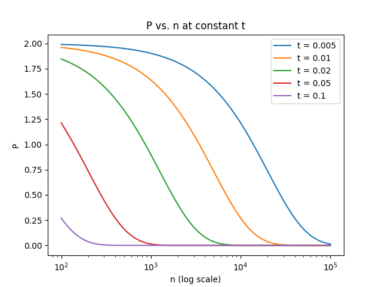
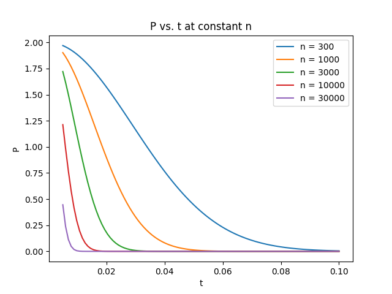

This is Clock Solitaire, a solitaire game played with a standard 52-card deck.
Rules (click to reveal)
Setup: Arrange your cards in twelve piles of four in a circle, like the twelve numbers on a clock face. Put the final pile of four in the center; this represents the clock striking 13.
Gameplay: A move in this game consists of taking a card from a pile on the clock and putting it face-up in the waste pile. Your first move is from the central 13 o'clock pile.
After that, each subsequent move is from the pile indicated by the value of the card that you just placed in the waste pile in the previous move. For example, if the first card is a Two, your next move would be from the pile in the 2 o'clock position. Aces are 1 o'clock, Jacks are 11 o'clock, Queens are 12 o'clock, and Kings are the 13 o'clock pile in the center.
In this digital version, to make a move, click on a facedown card in the right pile to move it to the waste.
Victory and loss conditions: Your goal is to move all the cards into the waste pile—but if a card points you to a pile that's already empty, that's game over!
If you're just here for the game and not the math that describes the game… well, that's it; there's not much more here for you. A not-very-exciting game with no strategy on the part of the player. If anything, it's a quiz on how well you remember the positions on a clock—something that many of us are out of practice with due to the prevalence of digital clocks today.
It's actually a bit more engaging if you ever get a chance to play it with a physical deck of cards. There's still no strategy or choice, of course, but there's something calming and almost meditative about methodically moving cards one by one without needing to think about strategy.
But if you're ready to dive into just a little bit of the math, carry on!
Great, so what math-y things are we talking about?
Before we start asking questions about the game, it'd be good to just play it a few times to make observations about it. But you're probably getting tired of hunting and clicking.
But fortunately, as I said, this game involves absolutely no choice whatsoever. That means it's easy to automate! So if you're tired of clicking, try this one:
There are a couple things that jump out after playing through a couple of games, at least for me:
When we get stuck, it always seems to be because of a King pointing at an empty 13 o'clock pile, never any of the other piles.
It's unlikely to win. In the vast majority of cases, you'll get stuck at some point before clearing the clock face. Depending on your luck, maybe you haven't even seen a winning game at all.
So these directly lead to the two questions I'm going to explore here: (1) Why is it always the Kings that give us trouble?, and (2) What's the probability of winning?
Perhaps other questions come to mind for you. I'd certainly encourage you to continue thinking about them after you read through the rest of this, but for now, let's look at these two questions.
The Four Troublesome Kings

How might we get into this situation? (Spoilers: we can't.)
So. Why is it that we always get stuck at a King?
Actually, what might be helpful as our first step is to frame this question another way: why is it that we never get stuck at any other card?
Well, how would we get stuck on, say, the 7 o'clock pile? By the rules of the game, this happens in something like the situation pictured on the right: when there's a Seven on the top of the waste pile, but the 7 o'clock pile is already empty—that is, we've previously already removed all four cards from the 7 o'clock pile.
So then we ask: how did we remove all four of those cards? And the answer, of course, is that we remove a card from the 7 o'clock pile every time we moved a Seven into the waste pile. So if we removed four cards from the 7 o'clock pile, that means we previously drew four Sevens.
But wait, if we previously already drew all four Sevens, how do we have another Seven in the waste pile now? And here lies the impossibility: we can't be in this situation at all, because for the pile to be empty, we would have to have drawn all four Sevens, but that would mean there are no more Sevens left to point at the empty pile.
There's nothing special about Seven, of course; this logic is true for all twelve of the clock face number piles. We will never get stuck on an Ace, or a Five, or a Ten. But the Kings and the 13 o'clock pile is different. Do you see why?
Well, we start the game with a move from the 13 o'clock pile, even though we haven't seen a King yet—we get one move from that pile for free. This means that once the pile is empty, we'll only have seen three Kings. The fourth King, once it's removed from the clock face, will point us back to the empty pile, and we get stuck. So a King can get us stuck, while no other card can.
Mini exercise to check your understanding: if we wanted to play this with a 54-card deck, adding in the two Jokers as a 14 o'clock, how would we modify the setup?
Answer (click to reveal)
Add an additional 14 o'clock pile in your setup (maybe next to the 13 o'clock pile in the center of the clockface), with only two cards in it. The first move could be from the 13 o'clock pile or the 14 o'clock pile; it doesn't really matter. But everything else works identically.
Even though this proof is fairly simple and straightforward, this fact is not obvious until you go through this, at least for me. I mean, once you play at least a game or two and see that it's a King in those games, you would start to suspect that it would always end with a King, experimentally. But it's still not really obvious why until you actually go through a proof like this.
Onward to Victory (with Some Small Probability)
So now that that's resolved, let's look at our second question: what's the probability of winning?
Well, one way to find out is to just do it a whole bunch, and find this out experimentally. After all, we set up this whole autoclicker thing, didn't we? We should go ahead and put it to good use.
Okay, great, we have an experimental number. But, uh… so now what? This is a simulation, so I have no idea what number you have. Maybe it's 5%, maybe it's 8%—everyone who comes to this page will have a different number. I mean, of course; that's the nature of randomness. But clearly, there should be one true underlying victory rate, because we're all playing the same game. Can we get this "true" value?
One instinct we might have is to just simulate it a whole lot of times. The more times we do it, the closer our experimental value is going to trend towards the true value. So we can just keep pressing those autoplay buttons more and more until we reach… actually, until we reach what? We're never going to reach exactly the true rate—or, well, technically we might land on it by chance, but we won't really know that we did, and then we might press the autoplay button again and jitter the rate again.
So we can never reliably get the true rate number, but we'll get close. Are we able to put a number on how close, then? Like, if I get an experimental rate of 7%, can I say something like "I don't know the exact rate, but I'm sure it'll be between 6% and 8%"? Appealing to the intuition we described in the last paragraph, we know that this interval should decrease in size as we grow.
Well… not quite. Even if the true win rate is 50%, or 90%, or 99%, there is still a technically nonzero probabiliy that we get an experimental result of 7 victories out of 100 total games. It's highly unlikely, but this chance will never reach zero. If you do the math, it turns out that if the rate is 50%, then there's a \(1.26 \times 10^{-20}\) chance of getting exactly 7 victories, and of course it only goes down further from there as you increase the true win rate—but the key here is that it's still a number above zero. The details of how to get this number are not necessarily relevant, though I'll include them here if you want to see.
Calculations (click to reveal)
This is a standard binomial distribution question. Copying the formula directly from Wikipedia, we have
\[\textrm{Prob}\left(k,n,p\right) = \binom{n}{k} p^k (1-p)^{n-k}\]
where \(k\) is the number of victories that we're considering, \(n\) is the total number of simulations we run, and \(p\) is the probability of a single simulation ending in victory. Also remember that \(\binom{n}{k}\) is how we notate n-choose-k: \(\binom{n}{k}=\frac{n!}{k!(n-k)!}\).
Then it's just a plug-and-chug problem. \(k=7\) and \(n=100\), and we're interested in the case where \(p=0.5\). Plugging everything in we get
\[\begin{aligned}\textrm{Prob}\left(k=7,n=100,p=0.5\right) &= \binom{100}{7} 0.5^7 (0.5)^{93}\\
&= 1.26 \times 10^{-20}\end{aligned}\]
If we increase \(p\) to \(0.9\), we get \(7.66 \times 10^{-84}\), and if we increase \(p\) again to \(0.99\), we get \(1.49 \times 10^{-176}\), truly unfathomably tiny. For comparison, if \(p = 0.07\), which is appproximately what we would expect the true value to be if our experimental is the same, we get \(0.154\) or just over 15%.
So we can't technically exclude this possibility if we want to be truly 100% sure. But it feels almost disingenuous to say that it's possible when it happens so infrequently.
So maybe we're okay with not being 100% sure, but just being 99% sure is good enough. That is, if we make 100 of these 99%-sure bets in different experiments, we should get about one wrong, on average. If we're okay with that, then we might be able to find an answer like "the true rate is 8.1±0.5%, and I'm 99% sure this is a true statement." That is, we're trying to find a confidence interval.
And at this point I think we've identified what exactly we're looking for in order to experimentally quantify our victory rate. It's time to bring it all together.
Time for some Real Math™
So first, let's recap, because there are a lot of numbers flying around here. And because we're now doing Real Math™, let's give make them variables and give them all letter names. To illustrate with a concrete example, let me actually run the simulation myself, give me a moment.
…
Okay, great. I got 44 victories out of 500 total simulations, for a win rate of 8.8%
The experimentally determined win rate: For me, that was 8.8%. Let's call that \(r\), for rate.
The true win rate: We don't know its value, and we won't be able to find its value exactly; that's the whole point. Let's give it the symbol \(r'\), with a prime mark to denote that it's the real deal.
The number of total simulations we did: As we said earlier, we intuited this would be important as we would trust an experimental rate more if it came from a larger average. I did 500 simulations in my case. Let's call this number \(n\), for number of simulations.
The maximum error to expect: By this I mean the maximum distance from our experimental win rate that we expect the true rate to be, i.e. half the size of the confidence interval. This is actually what we're trying to calculate, so I can't give you what the number will be just yet for my real example, but in my fake example above of 8.1±0.5%, I'm talking about the 0.5%. Traditionally this is called \(t\), for whatever reason. If you accidentally aspirate the d in "distance" when you say it aloud, you get a "t" sound, maybe…?
How confident we want to be in our range: We said 99% sure above, so let's just stick with this value for now. It'll turn out to be more useful for us to name the complement: how unsure we are that our range is correct, 1% in this case. Let's call this "unconfidence" \(P\) for probability of a mistake, where a mistake is when the true rate lies outside our maximum error bounds.
The range that we're 100% sure the true rate will be in: Now here's a weird number to keep track of. Above, we were talking about how, if we want to be truly 100% sure we didn't miss anything, we would have to include the possibility of rates all the way up to 100%. You can do the same logic to say you have to include the possibility of rates all the way down to 0%. These two numbers, 0% and 100%, will actually turn out to be useful. To avoid overcomplicating this, let's simply give them the names \(a=0\) and \(b=1\).
So there we have our seven numbers: \(r, r', n, t, P, a, b\). You perhaps have guessed by now, but I've been leading up to a magic formula that statisticians have come up with for exactly our problem, figuring out how close an experimental result is to the true result, and it uses these seven quantities in it. Well, actually, six of them—we'll come back to \(P\) in a moment.
So, drum roll please, here I present to you Hoeffding's Inequality:
\[\rm{Prob}\left(\left|r - r'\right| ≥ t\right) ≤ 2 \exp \left(\frac{-2nt^2}{\left(b-a\right)^2}\right) \]
…Yep, that sure is an inequality. I'm not going to try to derive it here. I'll leave a link to a PDF that derives it, but be warned that the math goes into much more hardcore statistics than what I'm doing anywhere on this page. Instead, let's talk about what this result means.
Let's first look at the left hand side. Reading it off, it's the probability that the absolute value of the difference between \(r\) and \(r'\) (our experimental and true rates) is more than our maximum error bounds \(t\). This is basically just \(P\), the probability of making a mistake; we can actually replace the entire left side with \(P\). It turns out we don't actually need \(r\) and \(r'\) at all for this calculation! Which is good; we didn't know \(r'\) to plug in.
And the right hand side? That's the useful part. It's some expression involving \(t\), \(n\), \(a\), and \(b\). We have numbers for three of them: \(n\), \(a\), and \(b\). In fact, let me plug in \(a\) and \(b\) immediately, to clean that up, because they're just 0 and 1. I'll leave \(n\) alone for the moment because although my own \(n\) is 500, I don't know how many times you did the simulation. Then we get:
\[P ≤ 2 \exp \left(-2nt^2\right) \]
What we're trying to do is keep P low, lower than 1%. The way we can do that is enforce that the right hand side is no greater than 1%, because the left hand side cannot go above that. We need to make sure we're okay even in the "worst" case, which is when \(P\) is so high that the two sides are equal, so we'll change that inequality sign into equality.
So we have only one variable left, \(t\). That makes sense; we went into this wondering how wide our interval should be, which is exactly what \(t\) tells us. Now all we have to do is solve for t:
\[\begin{aligned}
P &= 2 \exp \left(-2nt^2\right)\\
t &= \sqrt{ -\frac{1}{2n} \ln\left({\frac{P}{2}}\right) }
\end{aligned}\]
Let me give you a little calculator for running numbers through that last equation:
You can plug in your numbers for \(P\) and \(n\), but for me, what I get if I plug my numbers is… 7.3%.
So, uh, yeah, I'm 99% sure that the rate is 8.8±7.3%, or somewhere between 1.5% and 16.1%. I'm sure that's true, but geez, what a uselessly large range.
Playing Around with Horseshoes and Hand Grenades
Can we fiddle with the parameters to make this more useful? What do we have control over? Well, the three variables left in our final formula are \(P\), \(t\), and \(n\). In our previous calculation, we chose \(n=500\) because that's how many simulations we ran, and we somewhat arbitrariliy chose \(P=0.01\) as our acceptable mistake rate. Once we fixed those two, we could calculate what that would make our error bounds \(t\) be.
But what if we start changing \(n\) and \(P\)? Can we change them to get \(t\) to be something in the realm of reasonable?
Well, we have our equation. We could keep plugging numbers into the calculator above. But it'd be nice to see the whole equation in a graph. Unfortunately, graphing two input variables and one output variable is a bit difficult. We can attempt to show a 3D plot, but those are always a little bit harder to interpret. So I think it would be more useful to see two variables at a time on a 2D plot, holding one input variable constant and putting the other one on the x axis (and of course the output variable is on the y axis).


Let's take a moment to familiarize ourselves with these graphs. On the left graph, we start by choosing \(P\) and fixing it to a value; for example the top blue line is a 1% mistake rate. Then, we can choose an \(n\) value along the x-axis: we can imagine doing an experiment and sort of progressing along the x-axis until we get bored and stop. Then, of course, we read up to the blue line to get our final value for \(t\). The right graph is the opposite: each line represents an experiment done with a particular number of simulations (for example, the blue line is 300 simulations), and along the x-axis we consider what happens as we further lower our standards from a 1% mistake rate all the way up to accepting a 20% mistake rate.
The first thing to notice is that changing the mistake rate \(P\) that we're willing to accept has only a small effect: you can tell that on the left graph because all the lines are clustered very close together, while on the right graph the lines are largely flat, except at the very lowest \(P\) values.
On the other hand, changing \(n\) has a large effect (at least, changing \(n\) by orders of magnitude; notice that the x-axis is on a log scale). We can tell this from the curves on the left graph sweeping down significantly, or from the right graph by the fact that the curves are spaced wide apart. On the right graph, if we start from the \(n=300\) blue line and \(P=1\%\) at the left of the graph, we could try to accept more and more error, all the way up to \(P=20\%\), but even allowing for that huge acceptable mistake rate is not as effective as just doing more experiments instead, jumping down from the \(n=300\) blue line to the \(n=1000\) orange line.
So if we want to shrink our error bounds \(t\), it's better to increase the number of simulations \(n\) than our maximum mistake rate \(P\), as long as we can do so by orders of magnitude.
But wait! There's more! More parameters, that is
In the last section, we set \(n\) and \(P\), but we have three variables that are all interrelated. We can just as well fix \(t\) and \(P\), and from those two calculate \(n\), how many simulations we are required to do to achieve that error bound and mistake rate. Or we could fix \(n\) and \(t\) and calculate \(P\), seeing what the mistake rate is going to be if we insist on a certain number of experiments and error bound.
So let's graph these cases too. To be clear, all these graphs are graphing the same single equation, but we're just looking at different ways of slicing 2D graphs from the full 3D graph.


I won't spend as much time on this pair of graphs as I did the first pair, as they look pretty similar. Adjusting \(P\) has a small effect on the output, while adjusting the other parameter (whether that's \(t\) or \(n\)) has a much bigger effect.


On the other hand, putting the mistake rate \(P\) on the y-axis looks pretty different. The two graphs look pretty similar to each other, though, again emphasizing that \(t\) and \(n\) act pretty similarly, actually. Maybe that shouldn't have been a surprise. In the equation itself (\(P = 2 \exp \left(-2nt^2\right)\), if you'll recall), \(t\) and \(n\) are in almost the same position, inside the exponent. The only difference is that \(t\) is squared while \(n\) is not.
But there's another thing to notice about this graph: look at the values on the y-axis. It ranges from 0 to 2. A probability of 2? Wait, what does that mean? Did we do something wrong?
No, in fact, we didn't. Remember that Hoeffding's Inequality is, well, an inequality. We've been treating it like an equality because equality is the worst case scenario, but all the original statement is saying is that the real probability is something less than the \(P\) that we're calculating here. And, well, yes, the probability is less than 200%, because all probabilities are less than 200%. It's a true statement, technically.
So this is a reminder that in our original 8.8±7.3% calculation, we're probably more than 99% sure that the true rate is within this range; it's just that we can't say how much more. In practice, Hoeffding's Inequality gives a reasonably tight bound for sufficiently large \(n\), but only once we get past the part of the curve where P is near or above 100%.
Is this such a case, where \(n\) is high enough that we're in the "useful" regime? Um… I was kind of hoping so, which is why I went through all that math with you. But just looking at our results far, I think that's not actually the case here—running this again and again, we get repeatable results that suggest a much tighter bound. I suppose that's why you'll hear about Hoeffding's Inequality mostly in the context of something like machine learning, where it's common to have tens of thousands of test cases or more, as opposed to the hundreds or couple thousands that we have now.
So… let's try something else. There are other ways of calculating a confidence interval other than Hoeffding's Inequality, but at this point I think you'll agree that we've done enough experimentation on this; let's just try to figure this out analytically.
But before we do, I'll leave you with one more simulation you can play around with, which calculates the Hoeffding Inequality confidence intervals for you:
Experimentation? No. This Is Analysis!
Huh, that last simulation doesn't even have cards in it. We got real abstract there. So let's get back to what we're trying to do in the concrete: we're trying to find the win rate of Clock Solitaire.
In the same way that earlier we considered what things would look like if we lose, now let's consider what it looks like when we win. Can you say something about the last card? The obvious guess is that it'll be a King. But let's prove this.
What does it mean to win? The game rules state that we win when we remove the last card from the clock face. But actually it might be easier to think about it a different way: we win if we never lose. If we never lose, but we keep playing a card every turn, then after 52 turns of not losing, we'll have won.
We concluded earlier that our only loss condition is seeing the fourth and final King. So if we haven't lost by turn 52, then we did not yet see the fourth King before this final card. The only card that's possible to be our last card is the final King.
Okay, and…? But actually, that's enough to get our win rate that we're looking for. Just as losing is synonymous with seeing the last King before the final card, winning is synonymous with the opposite: that the last card is a King. All the stuff in between, all that moving around cards, none of it matters, as long as the final card is a King. And of course, the probability that any random card in a shuffled deck is a King is simply 1 in 13, or about 7.69%.
So that's it. That's the number we're looking for, our probability of winning a game of Clock Solitaire. 7.69%.
Well that was anticlimactic. After all that work with experimentation and the actual number falls out so easily by just thinking about it. I'd love to say this is all part of my plan, that I was trying to get you to feel the Real Math™ experience of trying to do something entirely the wrong way and then ultimately finding out the answer was actually really easy to get if you did it a different way. But, uh, actually, although that's what this ended up being, I had originally hoped the whole error analysis thing would be more useful to this experiment than it ended up being. So thanks for sticking around despite all this!
A footnote (click to reveal)
There is one part of my argument here that still feels a bit handwavy. Are we sure that the last card we see is actually a randomly shuffled card? After all, we're doing all this back and forth clock manœuvering; maybe this changes the probability of the last card we're going to see. That's how the Monty Hall Problem works.
In this case, that's not a problem—and our experiments from earlier do support our analytical conclusions. If we draw the Queen of Spades, we don't learn anything about the placement of the remaining cards except that none of them are the Queen of Spades. There wasn't any correlation between the shuffled cards when we put them down because they were random to begin with. (This still feels a little bit handwavy, but I'll leave any further formalization of this As An Exercise For The Reader.)
To Go Even Further Beyond
Today we asked about winning the game. But there are of course many more questions we can ask about this game.
I don't have time to go into all of them, of course, but I'll leave you with some of the questions, at least, for you to explore about on your own time—and I'm sure you can think of more questions for yourself!
The average number of remaining cards: Rather than asking the simple "how often do we win?" yes-or-no question, we can also consider the number of cards remaining on the clock face if we lose. Then, instead of a single probability, we would then be dealing with a probability distribution, i.e. a whole string of probabilities: the probability of 0 cards remaining (i.e. winning), the probability of having 1 card remaining, the probability of having 2 cards remaining, all the way up to the probability of 52 cards remaining. What does this distribution look like? If you do repeated experiments to find this out, as we did today, what does Hoeffding's inequality look like? (Hint: \(a\) and \(b\) aren't 0 and 1 anymore!)
Reintroducing choice: As we've already established, this is a game that is purely deterministic, but we can actually make it so that the player has some agency and strategy. Now, each of the thirteen piles is made of four faceup cards, rather than facedown ones, and making a move from a pile means choosing any card from the pile, not necessarily the top one. What would be a good strategy? Are all games winnable? What if we change the goal to trying to remove the least number of cards from the clock face, instead of the most? What kinds of strategies would work best there? (Incidentally, I often like playing other solitaire card games face-up instead of face-down, because then I can look and plan ahead, so I can actually strategize more effectively.)
The 100 Prisoners Puzzle: If you've heard of the 100 Prisoners Puzzle, you may have found some similarities between this and the solution to that puzzle. If you you follow math edutainment YouTube (and if you're finding this from SoME2, you probably are), you may have seen some similarities between this game and the solution to the 100 Prisoners Puzzle, most recently covered by Veritasium but also previously covered by Stand-up Maths and MinutePhysics (and probably others). Is there any deeper connection here?
Acknowledgements
This explorable was created by Viola Buddy for the Summer of Math Exposition 2 (SoME2), an event organized by the YouTube channel 3Blue1Brown to encourage people to create explanations of math or math-related subjects in any online medium. It was written in HTML/Javascript, with equations written using MathJax. Graphs were made using Python's Matplotlib graphing library. Public domain playing card vector images by Byron Knoll (card backs are by Viola Buddy).
Clock solitaire itself is a traditional card game with no clear inventor; here is its Wikipedia page. Note that traditionally, instead of moving cards to a waste pile, you place them under their respective pile, face up, but they are never moved again. I thought that would be a bit messy to show here, and a bit of a distraction, so I opted to throw them into a waste pile instead (and that's what I do when playing this game in real life with physical cards, since you don't need to shuffle quite as thoroughly afterwards because they don't end up sorted).